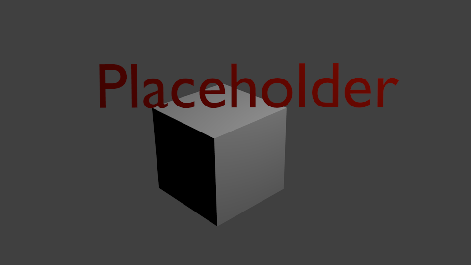
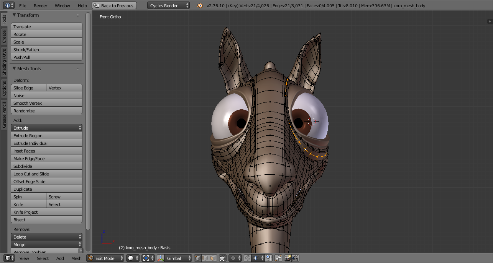
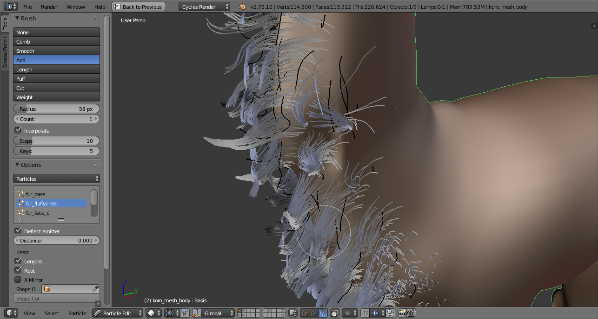
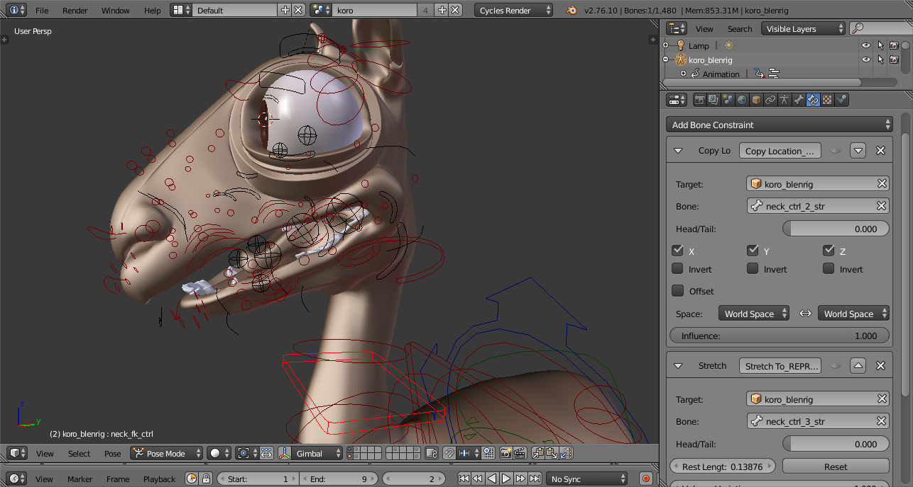
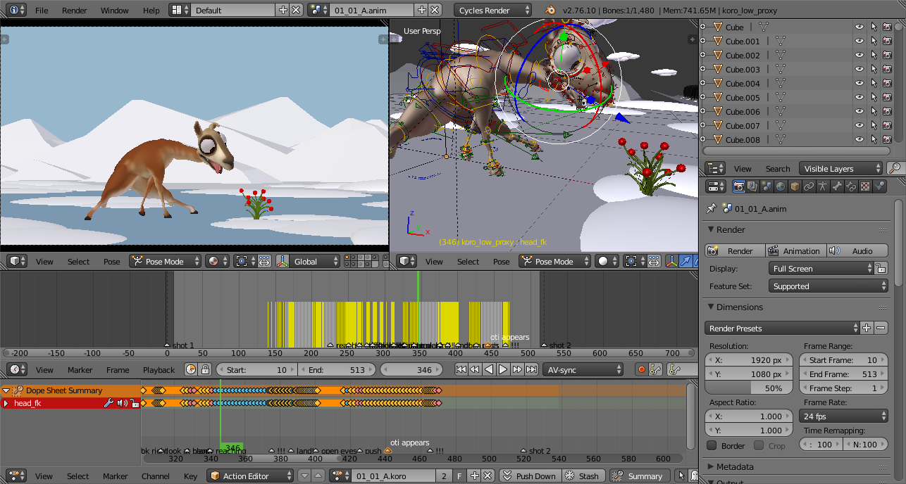

Pipelines, Linking, Proxies, and Overrides¶
Typical rigger+animator workflow with proxies using the example of [simple character]¶
[This should be as simple as possible: no hair/fur, simple rig (no spline ik), perhaps a non-character rig?]

1. Base mesh |
|
{kind=link}
- [show basic mesh object during modeling process in the viewport] “Modeler Molly creates a Mesh object, models, sculpts and textures it. Everything is local here since we’re at the very beginning of the pipeline.”
- [show rig bones in viewport] “Rigger Ricky links in the mesh object from Molly. Then he adds a new Armature object. His main work is creating bones in the armature and then adding constraints to the pose bones for control during animation.”
- [show link dialog for mesh object] “Animator Annie links in both the mesh object from Molly and the Armature object from Ricky. The armature object can be linked indirectly through the mesh object.”
- [show immovable pose bones (how? greyed out panel?)] “Annie now wants to animate by moving the pose bones in the armature object. But she has a problem: the armature object is linked, so the pose bones can not be moved by her. In pipeline terms: the pose bones are ‘owned’ by Ricky because he first created the object.”
- [show deformed rig in viewport after moving a proxy pose bone] “Annie therefore creates a ‘proxy’ for the linked armature object. This is a local object, so she can move the pose bones there, and they override the linked object.”
- [show final render scene viewport with the object linked in] “When all the animation for a shot is completed, Lisa the lighting TD creates a new file for the final rendering. All the assets are also linked into that file, so that fixes can still be made if necessary. Also importantly any linked objects are instanced as groups rather than used directly, which allows Lisa to move them around.”
Simple non-dynamic hair setup as used for Coro, the main character in Caminandes¶

1. Base mesh |

2. Grooming |

3. Rigging |

4. Animation |
{kind=link}
{kind=link}
{kind=link}
{kind=link}
[show Coro model without hair] “Modeler Molly sets up the mesh object as before.”
[show Coro hair edit mode during grooming] “Hair specialist Harry takes over (appends) the mesh object from Molly. This will work under the assumption that Molly doesn’t need to touch the Object datablock any longer, because she works with Mesh datablock instead!
He then adds a hair system to the character. “Grooming” defines the style and look of the character. Note that linking Molly’s object would be a problem, because then he couldn’t add a hair system to it. Editing conflict is avoided here only by passing mesh object ownership from Ricky to Harry before animation!”
[show Coro rig] “Rigger Ricky now continues by linking the object with hair from Harry (rather than directly using Molly’s mesh object).”
[show Coro pose with deformed hair] “Annie continues as before by making a proxy object for the armature and animating its pose bones. She doesn’t have to animate the hair itself, but it helps her to have it visible during animation[1].”
“Lisa also can use the object with hair as she did before. The hair displacement from mesh surface deformation (the “scalp”) is calculated automatically as the proxy pose defines the animation.”
Dynamic hair sim [Victor or Franck hair shot]¶
Serious trouble ensues because of linked objects after animation.
“Steps 1-4 happen as before: model, groom, rig, animate, and setup the complete render scene.”
- “Simulation specialist Simon now has to simulate motion of Harry’s hair strands. Long hair has to move in the wind and collide with the character’s body. But Simon has a problem similar to the one Annie had before: the object with the hair system is linked and he cannot add or tweak a simulation on it[2]. Simon has a few options now: 1. He can make the whole mesh object local in his file. Then he could modify the simulation settings, but any changes by Molly to her model would not end up in his file any more. He would have to painstakingly merge .blend files every time this happens, which is why linking was implemented in the first place! 2. He can directly edit Molly’s model file where the hair system is local. But this is dangerous because his changes would conflict with potential changes by Molly (it just moves the burden of merging changes back to Molly). He also still has to bake the simulation in his own file so that Annie’s animation is used correctly for hair physics.”
- “Now Lisa has to import the object with simulated hair from Simon. Assuming Simon made a local object copy to avoid the linking issues, Lisa then has to link Simon’s rather than Ricky’s object.”
Animation Offsets for Simple Variation¶
In “Caminandes: Llamigos” the final shot contains a group of penguins. A cheap way to avoid repetitive animation is needed.
A detailed description of the technique can be found on the Blender Cloud: Quick Penguin Crowds using MDD caches
- Molly, Ricky and Annie create a single animated penguin as outlined before.
- Now Lisa can link in the animated penguin and create a large number of instances. However, all of these instances share the same object and animation, so they move in perfect sync. To make the shot believable she wants to offset each penguin’s action so that they look like different characters (at least for a simple, short background sequence).
- To do this Lisa could employ the NLA editor to offset the actions. But this is not a suitable tool when the objects are linked. Furthermore the NLA still relies on evaluation of armatures for producing the deformation, which become prohibitively slow for multiple characters.
- A better solution is the use of the mesh cache modifier. After exporting the animation into a MDD file (which stores just deformation) Lisa can create a plain copy of the penguin and replace all rigging and animation modifiers with a single cache import. The mesh cache modifier allows offsetting and remapping the animation in a very simple and straightforward way.
- Lisa can now create multiple different penguins simply by making several copies of the original. Even though these are local copies, rather than linked instances, animation fixes will still be imported via the shared cache.
Animation Variants [multiple sheep in tornado shot OR penguins in Caminandes 3]¶
[Override mechanism of proxies does not allow use of multiple animation variants.]
For the Gooseberry tornado shots a flock of sheep has to be grouped around the central character Victor. Many sheep share the same base mesh, rig and hair groom, but fur coats must be simulated individually to account for relative wind direction and differences in sheep bodies (collision).
Note
In the final version of the movie a drastically simplified approach was taken. Here is a description of the original more complex idea, for illustration purposes.
Steps 1-3 are regular modeling, grooming, and rigging as before.
- Annie should animate each sheep individually, but is hampered by the proxy system: Because proxies write back to the original object there can only ever be one single proxy per sheep model, and consequently just one active action for all the instances.
- Simon now has to simulate hair motion as before. But in addition to inaccessible linked simulation settings there is a new problem: Even if he managed to tweak the simulation, both the settings and the resulting motion cache would be associated with the original model. Just like Annie he can only use one version of the hair motion at a time.
Material/Lighting py overrides in local scene¶
- Original scene viewport, with local materials
- Render/compo scene viewport: linked groups
- Change a material/light property -> panel is greyed out!
- Make a py script, changing linked objects’ properties
- Render/compo scene viewport with changed settings
Recap¶
Linking datablocks is used to allow back-and-forth pipeline work: fixes of a mesh, rig, or material can be done later, even after that datablock is already used by somebody else.
The central problem that arises from linking is that many artists have to work inside the same datablock, especially in the ubiquitous Object blocks:
- Ricky’s armature object also stores the pose bones that Annie needs for animation.
- Molly’s mesh object also stores the hair strands that Harry and Simon need for grooming and hair simulation respectively.
- The shader used for a mesh is also defined during mesh modeling and cannot be replaced later, even temporarily, for lighting and final rendering.
The “brute force” approach to solving these problems is to simply bypass the data lock for linked objects. Python scripts are not limited in the same way as operators and UI buttons, so they can just overwrite linked data. The downside is that none of these changes can be persistent and are lost as soon as you close the file. So any python overrides have to be stored as a script that gets executed every time the file is loaded - hardly a maintainable solution for a large project. In any case, the complexity of most tools, modifiers and simulations makes this method unsuitable for more than quick hacks.
Just making objects local also works, but that completely nullifies the advantages of linking.
Proxies are a step in right direction. They also avoid the persistence problem by making a local object - and then connecting it back to the original! Proxies were designed specifically for animating pose bones, and they work for that case only. Other areas like modifiers, hair simulation, particles etc. cannot use proxies (or only via python drivers for a few key options).
A more fundamental issue of all “override” approaches (proxies and python scripts and caches) is that they work on data which already exists in the linked object! Blender totally lacks any method for combining the content of an existing object with that of a new object. Such an “aggregation” concept could solve both the data lock problems of linked base objects as well as allow “branching out” objects into multiple different variants of animation, simulation, etc.
Caching has been used to implement a kind of limited aggregation actually: After animating a single character it gets cached, then a new object is created locally and “pulls in” the animation via the cache. This is still quite crude and cannot handle anything more than mesh deformation, but it serves the same purpose. More importantly: caching should not be a requirement for extending objects! In a complex pipeline an object would be extended and supplemented many times, and having to manage a cache for every step becomes very cumbersome (as was experienced during Gooseberry production).